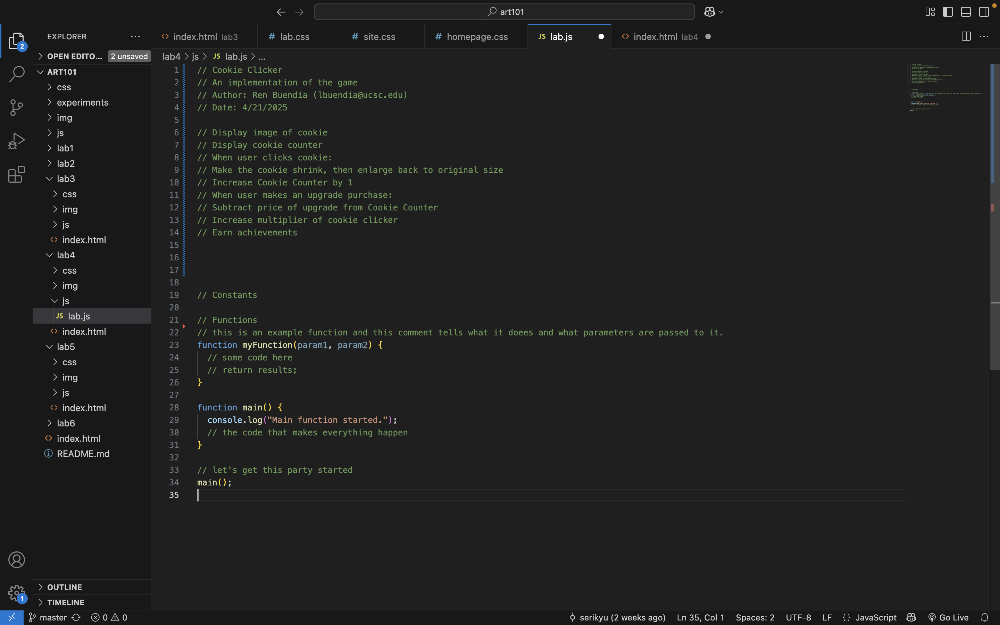

Lab 4 - Pseudocoding and Problem-solving
Challenge
Our task was to pseudocode an everyday task and a simple computer game. We did this by devising lists of instructions to carry out the necessary tasks needed to perform each action. If needed, we broke down tasks into simpler, smaller steps and sub-tasks.
Problems
Simplifying tasks into understandable and concise instructions was difficult. Especially with our example of getting gas at a gas station, we realized that there are sometimes multiple ways to carry out the same desired outcome of something. We came together as partners and made decisions based on what made the most sense to us both.
Reflection
Aside from having minor confusion on the instructions to the lab assignment, me and my partner did a good job of compiling our lists and pseudocoding. We spent a good amount of time revising and editing our work and pseudocode comments.
Results
// Cookie Clicker
// An implementation of the game
// Author: Ren Buendia (lbuendia@ucsc.edu)
// Date: 4/21/2025
// Display image of cookie
// Display cookie counter
// When user clicks cookie:
// Make the cookie shrink, then enlarge back to original size
// Increase Cookie Counter by 1
// When user makes an upgrade purchase:
// Subtract price of upgrade from Cookie Counter
// Increase multiplier of cookie clicker
// Earn achievements
Here is the javascript file of the pseudocoded comments:
